也许是diamox（预防高原反应的药）的副作用的关系（利尿），我半夜又爬起来上厕所了，这时候就感叹有一个私人厕所的便利之处了，出了帐篷就是，不用走去遥远的公厕。顺带一提，在campsite是不准随地尿尿的，据说crew会被罚，虽说实际上管的不太严。
因为今天的路程比较短，所以Zakayo让我晚起一个小时。虽说如此，实际上6点多整个campsite就已经吵吵嚷嚷了，所以根本睡不着。所幸昨晚的是10点以前上床睡的，也有7，8个小时的睡眠。
早饭：面饼+火腿肠+某种粥+小muffin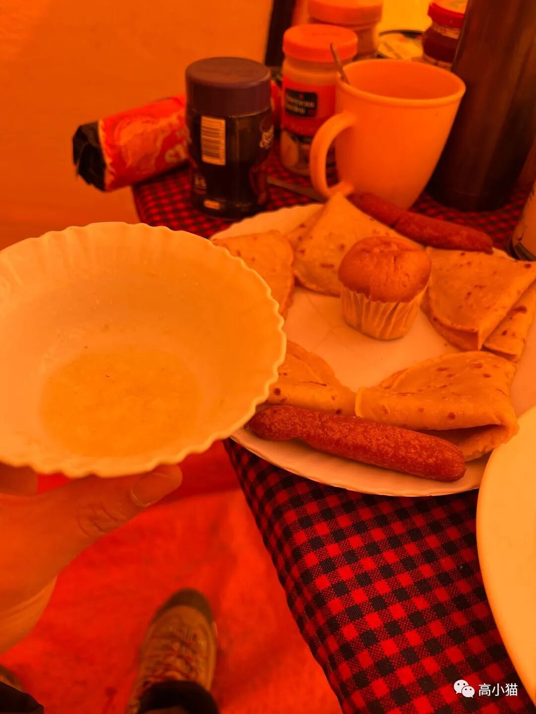
早饭9:26am把所有流程完成，从营地离开。
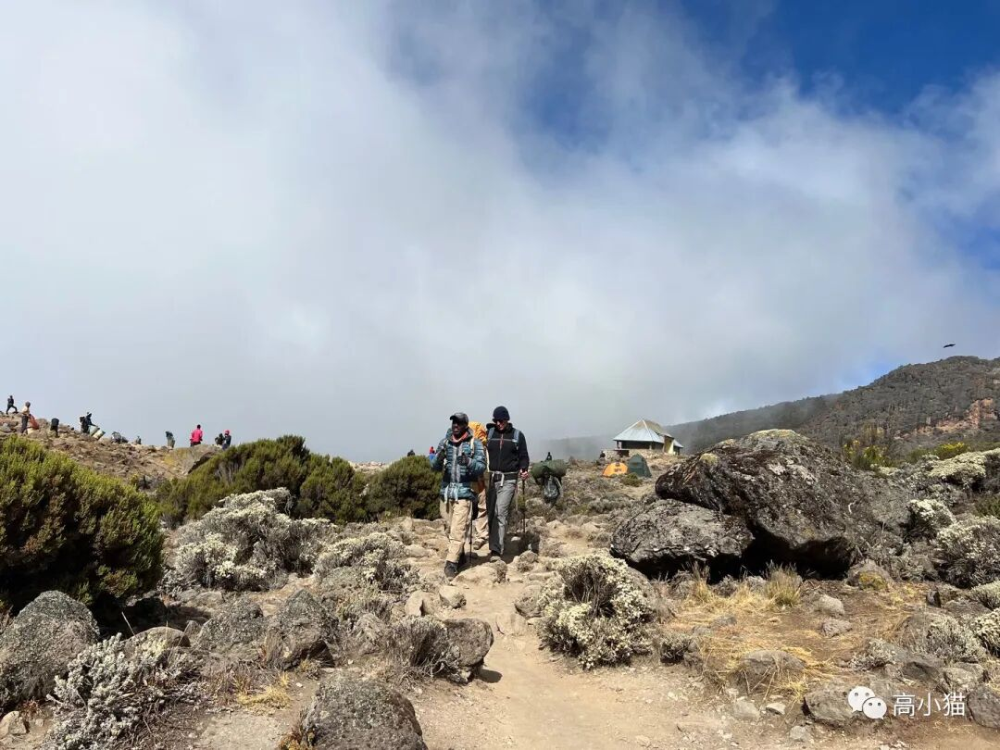
离开营地今天的行程是从目前的Barranco camp（3986m海拔）去往Karanga camp（3995m海拔），距离5.2km。虽说不长，但是中间要翻越一个叫Barranco wall的峭壁。
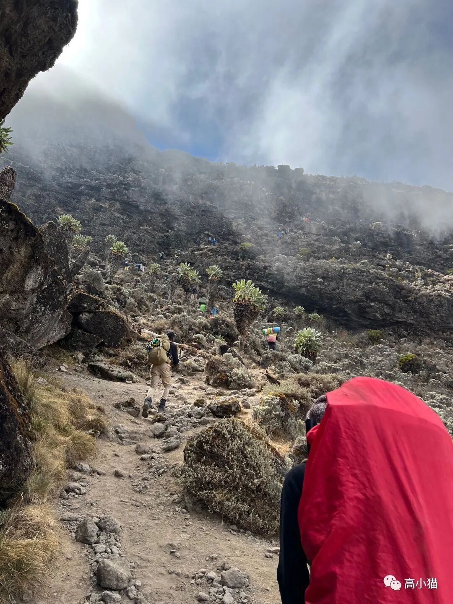
Barranco wall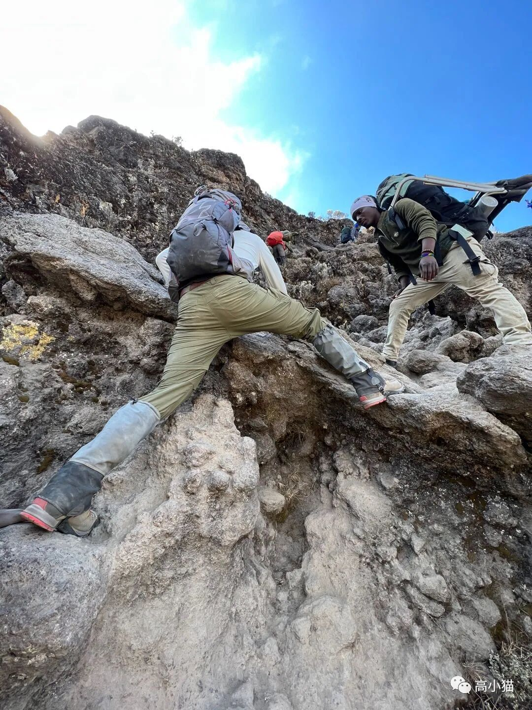
看着惊险，其实下面很低，摔下来也没事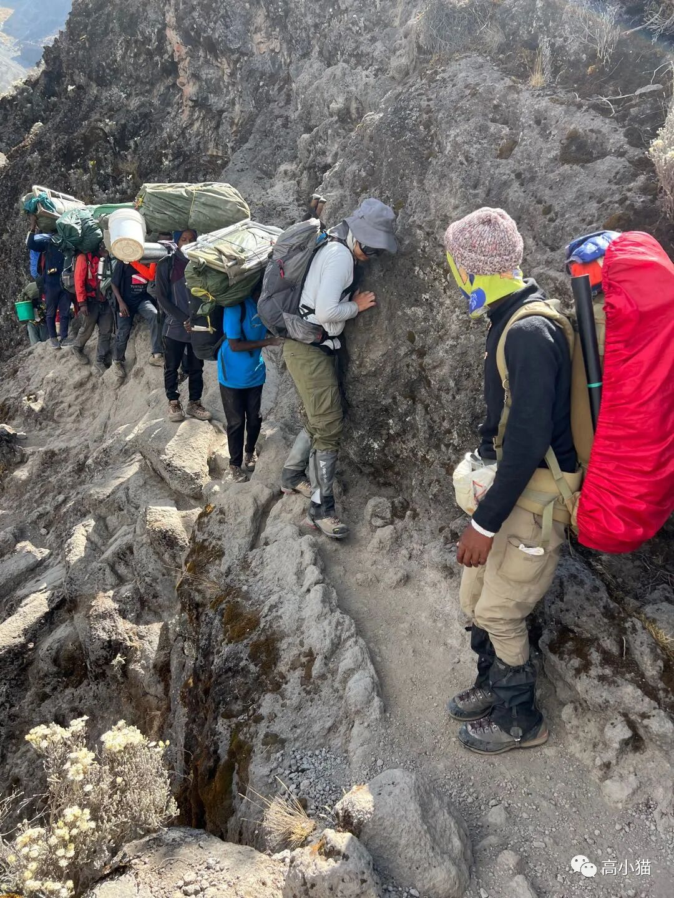
其实挺好走的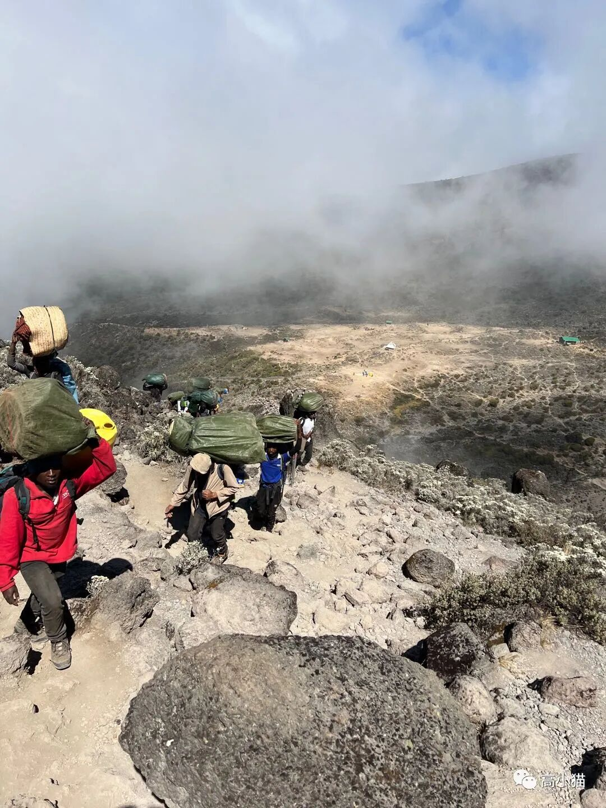
从上往下看挺陡峭的一路上基本上登山杖用不上了，全程手脚并用。不过没有什么危险的地方，而且有给力的导游保护。
我们大约是11:24am到达峭壁顶的，上面有一大块平台，有很多人在休息。
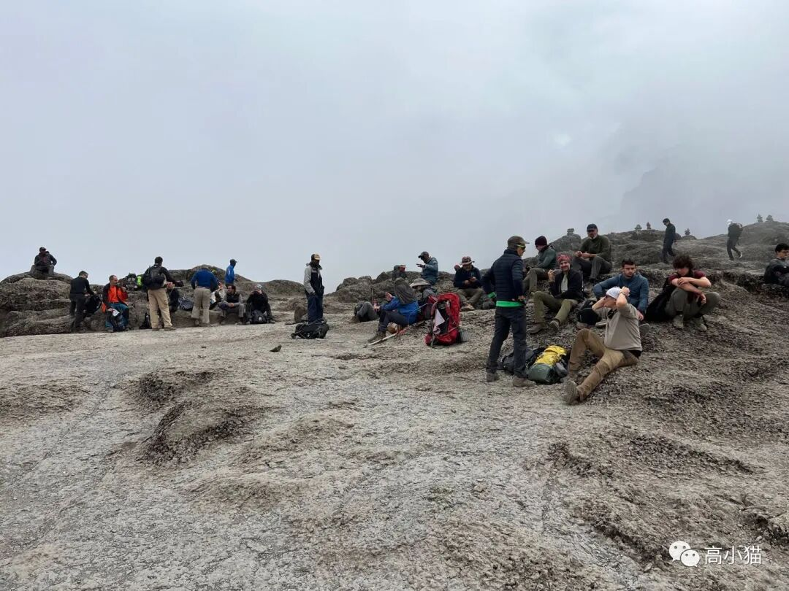
峭壁顶休息了一会儿，我们就从峭壁顶开始往下爬。雾很大，所以也看不清下面。
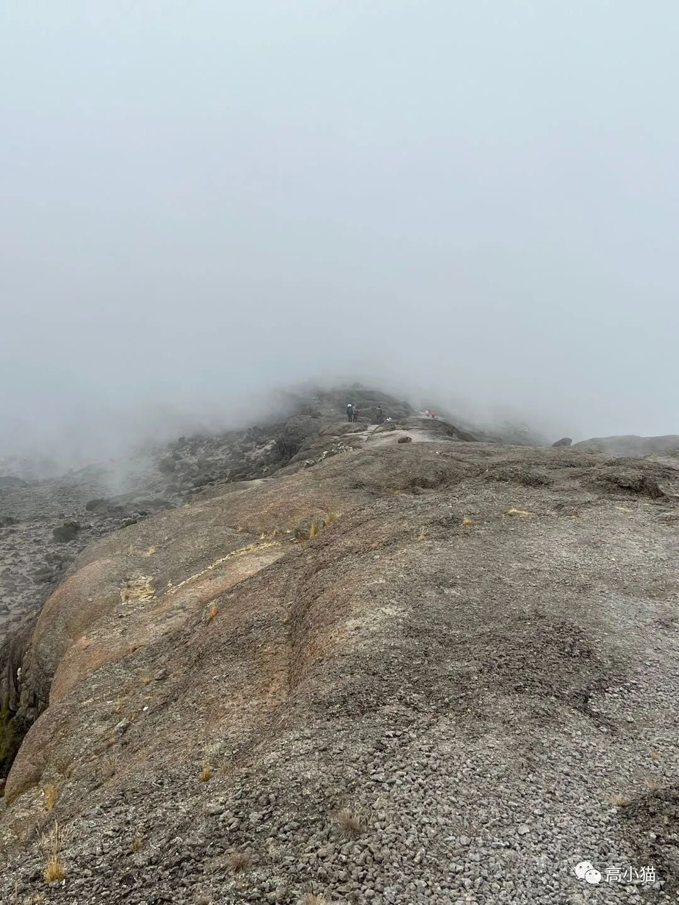
离开峭壁顶的人们接下来的一路大部分是下坡，但是也有上坡的时候。上坡的时候还是挺累人的，不过跟着Zakayo的步伐会轻松不少，因为他知道怎么调整步伐，让我既能有一定的速度，又不会太喘，消耗过多的体力。
一直跟着Zakayo有点无聊，我也感觉体力恢复得差不多了，于是就要求要自己走前面，自己来掌控步伐的节奏。
登山的时候步伐的节奏非常重要，决定了你的身体是在有充足氧气的情况下运作的，还是在缺氧的情况下运作的，要是一直在缺氧的情况下运作，体力会消耗过快，也更容易有高原反应。不过新手总是觉得自己能走得更快一点，不懂得控制的重要性，总是让自己处于一个气喘吁吁的状态。
我一开始的几天也都是新手的状态，每次走在Zakayo前面的时候，我总是走没一会儿就累得不行。虽说心里一直想控制，但是控制步伐就类似于开一个进程，一不留神，这个进程就被关掉了，步伐不知不觉就快了。这个时候脑子里就要有另外一个进程监控这个进程，每当发现自己步伐加快，呼吸变得急促的时候，就把这个控制步伐的进程重新开起来，重新按照一个让自己不会喘的节奏来迈步。
今天可能是我第三次在前面走，练习控制步伐。在休息的时候我请教Zakayo他是如何控制自己的步伐的，他说他就是跟着一个有经验的导游学。别人在不同的时候，会根据client的情况，采用不同的步伐速率，他也就学会了。我再问，他也说不出个方法论，看来问他是没用了。
我自己尝试了几个方法，一个是在心里哼曲子，打拍子，跟着拍子迈步。这个方法可以有一定的效果，但是一走神曲子就没了，步子又乱了。还有有的时候在爬一些难爬的地方的时候，不能跟着拍子迈步。
第二个是经常观察自己的呼吸，每次呼吸急促的时候，就放慢步伐。不过这个方法的问题是不稳定，而且经常发现自己呼吸急促的时候，已经有些太晚了，人已经太累了，要好一会儿才能恢复过来。
第三个方法似乎最有效。话还要说回我们在路上碰到的一个女挑夫。实在走不动路了，每隔一段路就要歇。Zakayo就说不能扔下她，让她跟我们一起走。
Zakayo让我在前面控制步伐，我在前面的时候，一直考虑到这个女挑夫的情况，想象她的体力状况，不知道为什么，这样控制步伐非常轻松，步伐也很稳定。
我实在是想不太清楚为什么这样子控制步伐会很轻松，至今也没想明白。
附：其实平时的生活也是一样，尤其是当没有一个老板管理，而是自己管理自己的时候，工作的节奏非常重要。工作的时候不能让自己太过累着，而是应该让自己始终处于一个经常能喘口气，经常能开心一下，放松一下的状态。不过如何管理自己，让自己始终能保持这样的状态，我至今还没有看到对我自己有效的方法论。可能让自己后面跟着一个人，自己需要照顾这个人的工作节奏，这样的方法可能会有效？
话说虽然我们的步伐非常慢，但是女挑夫可能是承重太多，体力又消耗了太多，连这样的步伐也跟不动了。Zakayo于是就帮她把她的行李也背了，她终于能够跟得上了，比我们还走得快。Zakayo说她是第一次上山来做挑夫，在坦桑尼亚这个算是还不错的赚钱手段，很多人说他们可以当挑夫，但是真的上了山，发现其实没法挑那么重上山，不过大家路过都会顺手帮一把，慢慢就行了。
我看Zakayo背两个包真的很重，但是他一脸轻松的样子。我就问他估计这两个包加起来多重。他跟我说他自己的包大约35kg，那个女挑夫的包大约15kg，加起来50kg。我又问他我的包呢？他说估计6-7kg。我意识到我跟Zakayo之间的巨大差距= =。不过他已经在山上工作有7-8年了，一开始是做导游，后来学了英语，考了导游证，才变成了导游，可以多赚一点。
1:38pm的时候，我们已经可以看到Karanga camp了。
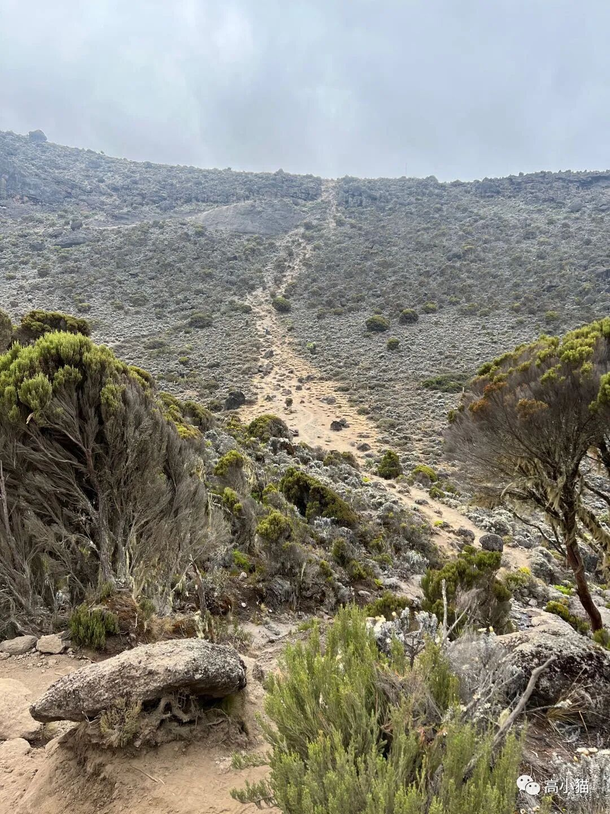
高坡上就是camp，可以看到一些房子最终在2:18pm到达camp，就这肉眼可见的一段路，走了整整40分钟，高海拔还是很累人的。
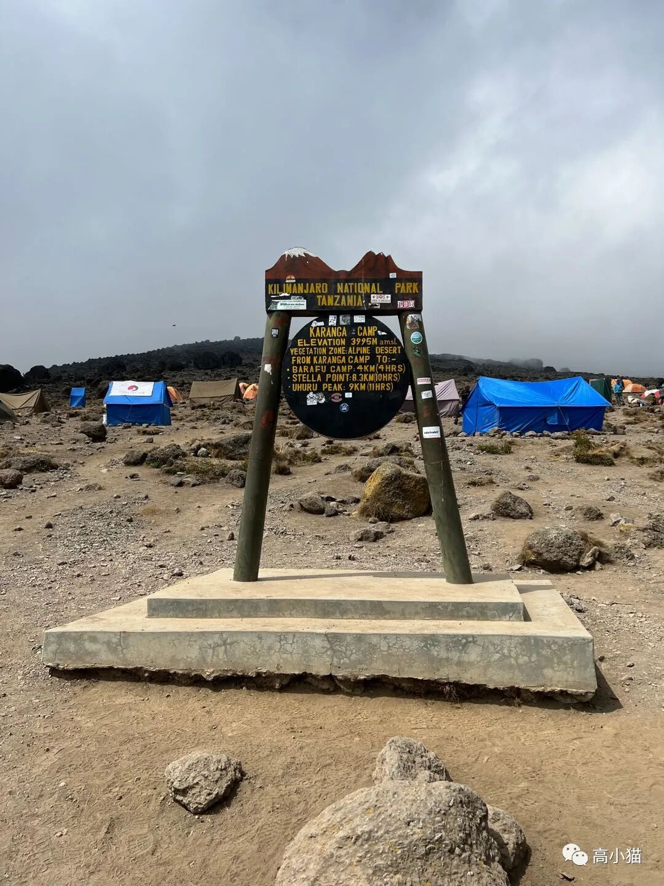
Karanga camp到了camp以后Oscar帮我准备了午饭，今天的是cream/粥/黄瓜皮汤，以及鸡蛋土豆煎饼（加上番茄酱），以及几块菠萝和西瓜。话说他们serve我的西瓜真的很不甜，感觉都像是西瓜皮边上的果肉，而且籽还超级多。我想坦桑尼亚这个西瓜的品种也有点太次了吧。汤倒是不错，Oscar的加盐量又回复到一半的量了，没有太咸。
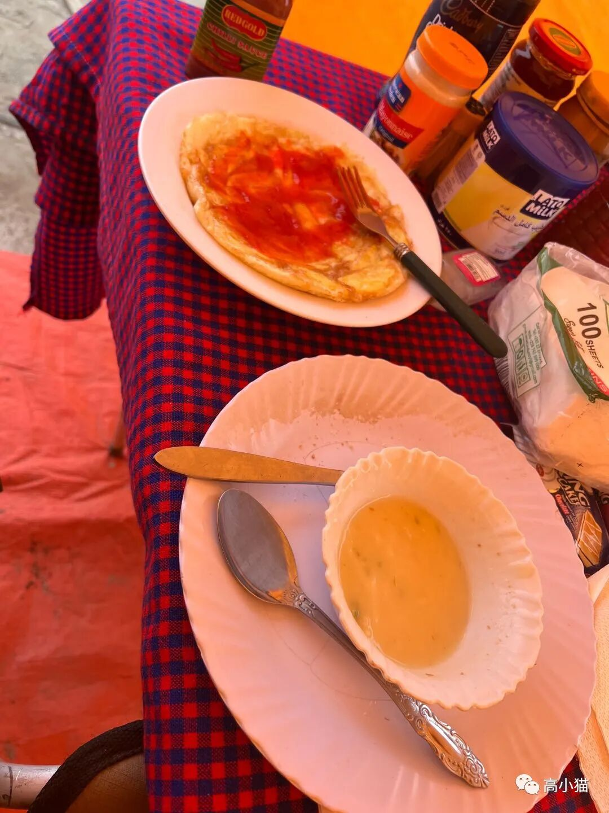
午饭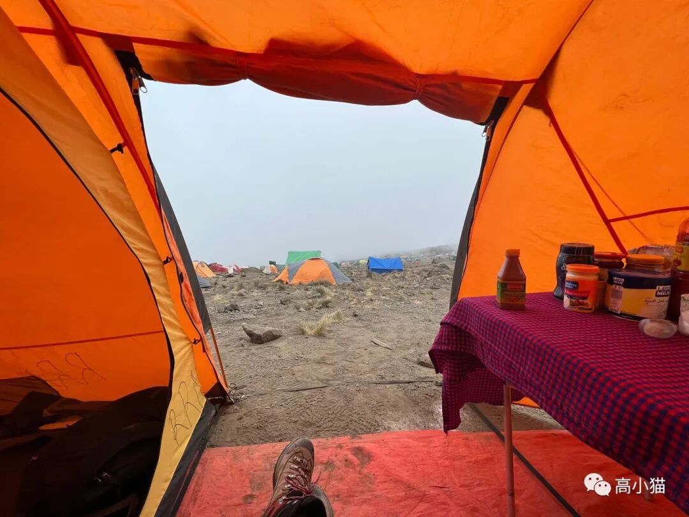
帐篷向外看吃完饭，Dominic给我端来了几乎满满一盆的热水。既然昨天洗了头，今天就把身体用洗面奶也洗一下好了。洗完以后舒服多了，开始写文章。
写完文章几乎已经6点，又到了晚饭的时间。今天的晚饭有两种汤。一种是南瓜汤，一种是花生酱浓汤配上一些蔬菜和肉。我从没喝过花生酱做出来的汤，因为我自己很喜欢吃花生酱，所以感觉还不错。除了两个汤，还有鸡腿肉配饭，肉上面也是裹的和花生酱汤类似的酱汁。我在坦桑尼亚看动物期间，吃的一直都挺单调的，宾馆里也都是那几种花样，这几天camping的生活真的让我见识到了坦桑尼亚料理的丰富，Oscar应该在坦桑尼亚人里算是很会做菜的吧。
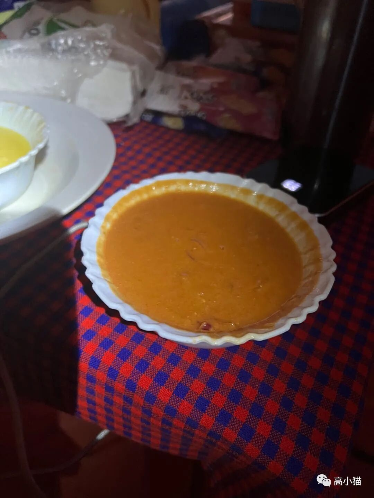
花生酱浓汤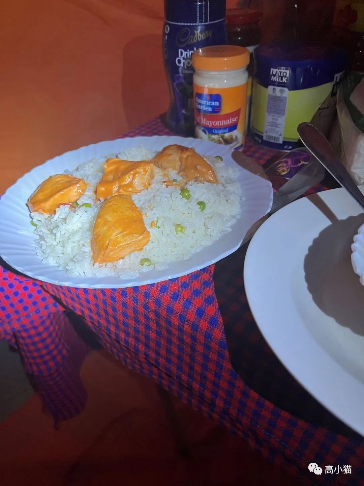
花生酱鸡肉饭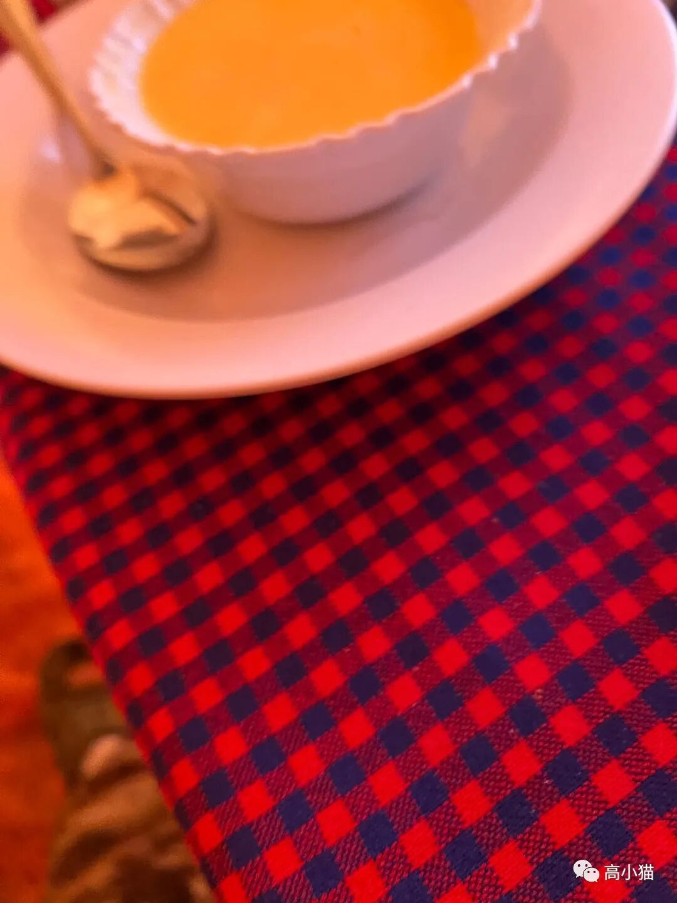
南瓜汤吃完晚饭，和家人联系了一下，准备睡了。
明天就是第六天，也就是登顶前一天了。
明天的行程会从我今晚睡的Karanga camp（3995m海拔）出发，走3.3km到Barafu camp（4662m海拔）。
而明天晚上，我们会在11:30pm出发，这样可以比0点出发的大部队早一点（因为我走得相对慢）走，不至于落后太多。具体的登顶时间预计应该在第七天的7am左右（5895m海拔），然后再回到Barafu camp（4662m海拔）吃午饭，之后继续下降到Mweka camp（3106m海拔），当天在Mweka camp睡。
既然11:30pm出发，就意味着10:30pm起，为了有8小时睡眠，我明天就要2:30pm睡下。估计hike到camp以后吃个午饭，洗漱一下就差不多了。写文章的时间也不会有。
下一篇出来估计就是登顶或者登顶失败以后了～回见～
完